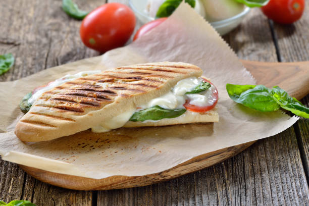

Caprese Panini
A Party In Your Mouth
Turn up the music and heat up the grill, because your taste buds are about to bust out their best moves.
Enjoy! Note: this recipe makes 1 serving and takes approximately 10 minutes or less to make.
Ingredients
- 2 slices of any bread of your choice (ciabatta, baguette, plain sliced, etc.)
- 1 tablespoon of olive oil
- 1-2 tablespoons of pesto (amount depends on your bread size and flavor preference)
- 2-3 tomato slices (amount depends on your bread size and flavor preference)
- 1-2 slices of mozzarella cheese (fresh mozzarella is best!)
- 2-4 fresh basil leaves (amount depends on your bread size ans flavor preference)
- Pinch of sea salt (or regular salt) to taste
- Pinch of cracked pepper (or regular pepper) to taste
Directions
- Heat your electric grill. (Note: most indoor electric grills have a standard heat setting; if your grill has a specific setting for paninis, please follow the manufacturer's directions.)
- Lightly brush or drizzle the olive oil on the outsides of your bread slices (this will give them a lovely crunch and flavor after grilling).
- Spread the pesto on the insides of both slices of bread.
- Place tomato slices on the bottom piece of bread.
- Place mozzarella slices on top of the tomato slices.
- Place basil on top of the mozzarella slices.
- If seasoning with salt and pepper, do so now or skip this step.
- Place the second slice of bread on top of the rest of the ingredients.
- When your grill has finished preheating, place your sandwich on the grill and close the lid. Cook for 3-5 minutes depending on the thickness of your sandwich (you'll want the cheese to be melted).